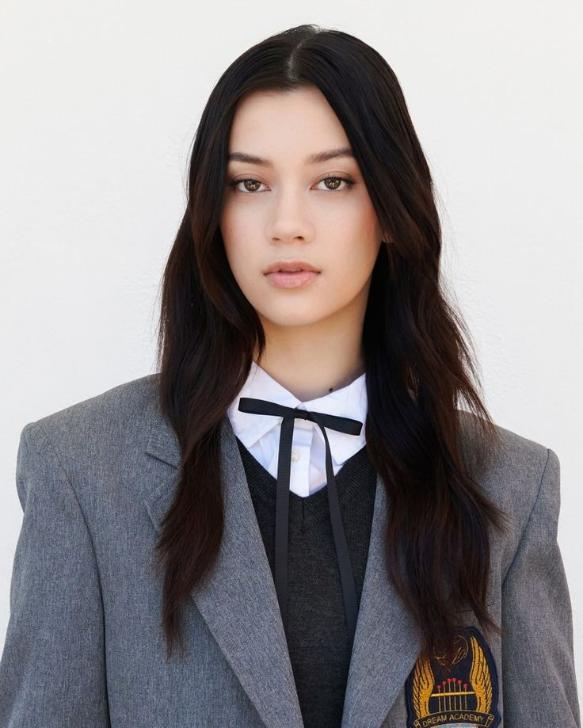

Megan Meiyok Skiendiel, nascida a 10 de fevereiro de 2006 em Honolulu, Havai, é cantora, dançarina, modelo e atriz americana de ascendência chinês‑singapurense por parte de mãe e sueco‑americano por parte de pai.
Além da música, já participou de séries como Sydney to the Max (Disney Channel) em 2021 e Bosch: Legacy em 2022.Também atua como modelo em semanas de moda de alta-costura em Paris e Los Angeles.

Ficou famosa ao participar do reality The Debut: Dream Academy em 2023, concorrendo com mais de 120 000 pessoas e garantindo o 5.º lugar, o que a levou ao grupo global KATSEYE, criado pela HYBE e Geffen Records.